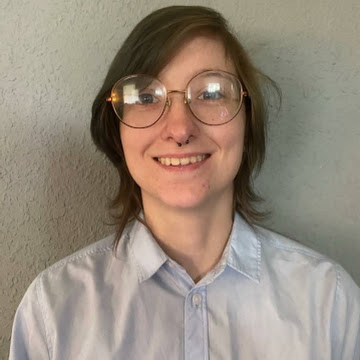

Ren Blackman

My Goal
I am seeking an opportunity to put my creative problem solving skills to use towards endeavors which will challenge and grow my critical thinking skills. I am working to grow my expertise in cybersecurity.
Work History
- Security: 2021 - Present
- Securitas
- Senior Security Supervisor: Nov. 2022 - Present
- Manage scheduling
- Train new hires on security software and procedures
- Assign and monitor patrol teams and patrol schedules
- Oversee and manage security office
- Security Supervisor: July 2021 - Nov. 2022
- Oversaw assigned patrol team members
- Managed assigned patrol team responsibilities
- Monitored cameras
- Maintained up-to-date records for the patrol team
- Security Guard: Feb 2021 - July 2021
- Monitored cameras
- Completed scheduled patrol assignments
- Escalated security concerns according to procedure
- Non-profit management: 2020
- Director of Content Creation for Mental Illness Interrupted: Jan. 2020 - Dec. 2020
- Recruited and managed members of our Content Creation team
- Oversaw and approved projects
- Created content for the website and our social media accounts
- Event Management: 2017-2019
Manager at Noah's Event Venue
- Managed custodial staff and scheduling
- Managed security staff and scheduling
- Managed stock and inventory
- Managed set up and break down of events
- Communicated with guests and staff to ensure needs were met
- Managed bar staff
- Closed building after events
- Recruited staff
- Writing and Research: 2014-2017
- Legislative Fellow for the Office of Georgia State House Representative Spencer Frye
- Monthly policy research reports
- Legislative research
- Wrote bill memos with voting advice for the Representative
- Contributed to the Representative's blog
- Assisted in management of the re-election campaign office
- Get Out the Vote efforts
- Writer for NextWave Advocacy, LLC
- Listened to recordings of constituent interviews in order to craft letters on their behalf for grassroots advocacy campaigns
Educational Background
I attended the University of Georgia in Athens, GA from 2014-2017, where I majored in Political Science with a double minor in Women's Studies and Religion. During my time at UGA, I was an active member of Demosthenian Literary Society.
Skills
- Create problem solving
- Critical thinking
- Organization
- Eye for detail
- Robust communication skills
- Ability to work well on my own or in a team
- Time management
Other
Contact Me